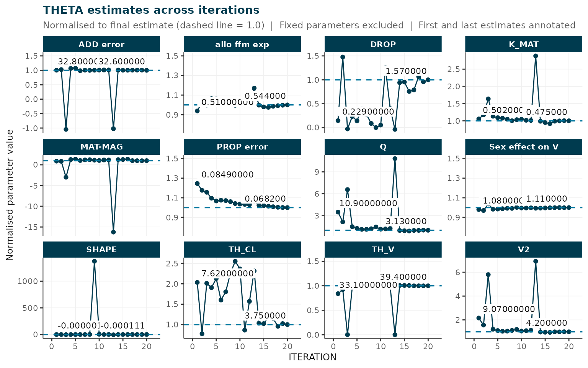
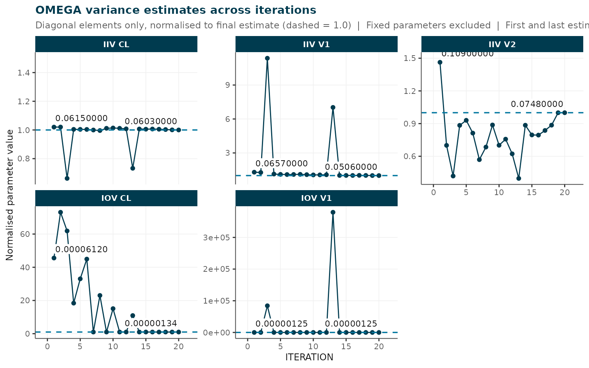
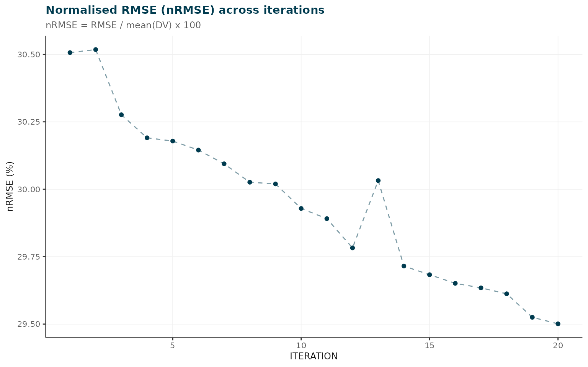

Simulated Busulfan PK: Part 2 (ferx) -- Model-Informed Iterative Cleaning
Source:vignettes/busulfan_pt2_ferx.Rmd
busulfan_pt2_ferx.RmdOverview
This vignette demonstrates the ferx engine for
model-informed iterative observation cleaning. It mirrors the
NONMEM-based workflow in Part 2
(busulfan_pt2_modelbased_cleaning) but uses
engine = "ferx" instead of NONMEM/PsN, requiring only the R
package ferx – no
external tools.
Prerequisites: This vignette continues from Part 1 (
busulfan_pt1_gc_exclusion). Run Part 1 first and savebusulfan_pt1_ready.csvto your working directory before proceeding.
1. Load the Phase 1 dataset
pt1_file <- "busulfan_pt1_ready.csv"
if (file.exists(pt1_file)) {
dat <- read.csv(pt1_file)
message("Loaded Phase 1 output: ", pt1_file)
} else {
message(
"busulfan_pt1_ready.csv not found -- falling back to raw dataset.\n",
"Run busulfan_pt1_gc_exclusion first to generate the cleaned input."
)
dat <- read.csv(system.file("extdata", "busulfan_sim.csv",
package = "irxclean"))
}
#> busulfan_pt1_ready.csv not found -- falling back to raw dataset.
#> Run busulfan_pt1_gc_exclusion first to generate the cleaned input.
cat(sprintf(
"Patients: %d | Rows: %d | Observations: %d\n",
length(unique(dat$ID)), nrow(dat), sum(dat$EVID == 0)
))
#> Patients: 100 | Rows: 1600 | Observations: 12002. Define the ferx model
A .ferx model file describes the structural PK model,
random effects, and error model. For this busulfan dataset we use a
one-compartment IV infusion model with IIV on CL and V and proportional
residual error.
model_text <- '
[parameters]
theta TVCL(4.0, 0.1, 100.0) ; Clearance
theta TVV(15.0, 1.0, 500.0) ; Volume
omega ETA_CL ~ 0.09 ; IIV CL
omega ETA_V ~ 0.04 ; IIV V
sigma PROP_ERR ~ 0.1 (sd) ; Proportional error
[individual_parameters]
CL = TVCL * exp(ETA_CL)
V = TVV * exp(ETA_V)
[structural_model]
ode(states=[central])
[odes]
d/dt(central) = -(CL/V) * central
[scaling]
y = central / V
[error_model]
DV ~ proportional(PROP_ERR)
[fit_options]
method = focei
maxiter = 300
'
model_path <- file.path(tempdir(), "busulfan_1cpt.ferx")
writeLines(model_text, model_path)
cat("Model written to:", model_path, "\n")
#> Model written to: /tmp/RtmpmkSLyD/busulfan_1cpt.ferx3. Iterative observation flagging with ferx
remove_erroneous_obs() with engine = "ferx"
calls ferx::ferx_fit() at each iteration instead of NONMEM.
The same algorithm applies: identify the observation with the largest
|CWRES|, remove it, and re-fit.
Results are cached to an RDS file so subsequent renders skip the fitting.
cache_file <- "busulfan_ferx_results.RDS"
if (file.exists(cache_file)) {
results <- readRDS(cache_file)
message("Loaded cached results from ", cache_file)
} else {
results <- remove_erroneous_obs(
dat = dat,
mod = model_path,
run_id = "bu_ferx",
n = 20,
verbose = TRUE,
save_results = FALSE,
stability_check = TRUE,
engine = "ferx",
method = "focei"
)
saveRDS(results, cache_file)
message("Results saved to ", cache_file)
}
cat("Iterations completed:", nrow(results$rmse), "\n")
cat("Flagged observations (ranked by |CWRES|):\n")
print(results$rem[, c("ID", "TIME", "DV", "CWRES")])#> ferx package not installed -- loading pre-computed NONMEM results as fallback.4. Removal metrics
The same plotting functions work identically regardless of engine.
plot_removal_metrics(results, metric = "pOFV", verbose = FALSE)
Change in pseudo-OFV per iteration.
plot_removal_metrics(results, metric = "thetas", verbose = FALSE)
THETA estimates normalised to final value.
plot_removal_metrics(results, metric = "omegas", verbose = FALSE)
OMEGA estimates normalised to final value.
plot_removal_metrics(results, metric = "sigmas", verbose = FALSE)
#> All SIGMA parameters are fixed; no SIGMA plot generated.
plot_removal_metrics(results, metric = "rmse", verbose = FALSE)
nRMSE across iterations.
5. Model stability
stability <- check_model_stability(results, threshold_pct = 20)
#>
#> irxclean :: Model stability check (threshold: 20%)
#> --------------------------------------------------
#> Parameters assessed : 17 (fixed excluded)
#> stable : 4
#> drifted : 3
#> unstable : 10
#> Unstable: MAT-MAG, ADD error, DROP, SHAPE, Q, V2, IIV V1, IOV CL, IOV V1, IIV V2
#> nRMSE trend: decreasing
print(stability)
#> irxclean model stability (threshold: 20%)
#> stable : 4 parameter(s)
#> drifted : 3 parameter(s)
#> unstable : 10 parameter(s)
#>
#> Parameter summary:
#> PARAMETER RSE_PCT N_REVERSALS CV_LATE_PCT DRIFT_PCT STATUS
#> TH_CL 37.32 12 8.065 5.08e+01 drifted
#> TH_V 34.43 10 0.326 1.92e+01 drifted
#> MAT-MAG 7870.87 9 16.079 1.36e+01 unstable
#> K_MAT 37.68 7 3.686 5.21e+00 stable
#> PROP error 6.10 4 0.797 1.97e+01 drifted
#> ADD error 78.03 11 0.270 4.77e-01 unstable
#> DROP 88.68 12 13.318 5.86e+02 unstable
#> SHAPE 443.64 10 15.904 1.07e+04 unstable
#> allo ffm exp 4.61 8 0.984 6.59e+00 stable
#> Sex effect on V 1.27 11 0.149 2.02e+00 stable
#> Q 119.05 8 4.428 7.14e+01 unstable
#> V2 98.14 10 2.221 5.37e+01 unstable
#> IIV CL 9.84 9 0.268 1.96e+00 stable
#> IIV V1 137.25 10 0.721 2.30e+01 unstable
#> IOV CL 135.55 9 0.000 9.78e+01 unstable
#> IOV V1 370.66 3 0.000 0.00e+00 unstable
#> IIV V2 28.55 9 10.694 3.16e+01 unstable
#>
#> nRMSE trend: decreasing
flag_tbl <- stability_flag_table(stability)
if (nrow(flag_tbl) > 0) knitr::kable(flag_tbl, digits = 2) else
cat("All parameters stable.\n")| PARAMETER | MEAN | FIRST | LAST | RSE_PCT | N_REVERSALS | CV_LATE_PCT | DRIFT_PCT | STATUS | |
|---|---|---|---|---|---|---|---|---|---|
| 3 | MAT-MAG | 0.01 | 0.10 | 0.12 | 7870.87 | 9 | 16.08 | 13.62 | unstable |
| 6 | ADD error | 26.36 | 32.77 | 32.62 | 78.03 | 11 | 0.27 | 0.48 | unstable |
| 7 | DROP | 0.85 | 0.23 | 1.57 | 88.68 | 12 | 13.32 | 586.12 | unstable |
| 8 | SHAPE | -0.01 | 0.00 | 0.00 | 443.64 | 10 | 15.90 | 10737.04 | unstable |
| 11 | Q | 6.42 | 10.92 | 3.13 | 119.05 | 8 | 4.43 | 71.35 | unstable |
| 12 | V2 | 7.01 | 9.07 | 4.20 | 98.14 | 10 | 2.22 | 53.65 | unstable |
| 14 | IIV V1 | 0.10 | 0.07 | 0.05 | 137.25 | 10 | 0.72 | 22.99 | unstable |
| 15 | IOV CL | 0.00 | 0.00 | 0.00 | 135.55 | 9 | 0.00 | 97.81 | unstable |
| 16 | IOV V1 | 0.03 | 0.00 | 0.00 | 370.66 | 3 | 0.00 | 0.00 | unstable |
| 17 | IIV V2 | 0.06 | 0.11 | 0.07 | 28.55 | 9 | 10.69 | 31.63 | unstable |
6. Demographic comparison
plot_demographic_comparison(
data = dat,
results = results,
continuous_cols = c("AGE", "WT", "HT"),
categorical_cols = "SEX"
)
#> TAD column not found - computed from dose records (EVID == 1 / AMT > 0).
#> irxclean demographic comparison (16 subjects with removed obs)
#>
#> Statistical tests:
#> covariate test p_value significant
#> AGE Wilcoxon rank-sum 0.4351332 FALSE
#> WT Wilcoxon rank-sum 0.2774897 FALSE
#> HT Wilcoxon rank-sum 0.2691470 FALSE
#> SEX Chi-squared 0.4710967 FALSE7. Apply final exclusions
After reviewing the flagged observations, apply user-approved exclusions:
cleaned <- remove_observations_from_data(
data = dat,
results = results,
n = 10
)
write.csv(cleaned, "busulfan_ferx_cleaned.csv", row.names = FALSE)
cat("Cleaned dataset:", nrow(cleaned), "rows\n")8. Generate HTML report
generate_report(
results = results,
data = dat,
continuous_cov_cols = c("AGE", "WT", "HT"),
categorical_cov_cols = "SEX",
title = "Busulfan PK -- ferx Model-Informed Cleaning Report",
output_file = "busulfan_ferx_report.html"
)Session information
sessionInfo()
#> R version 4.6.1 (2026-06-24)
#> Platform: x86_64-pc-linux-gnu
#> Running under: Ubuntu 24.04.4 LTS
#>
#> Matrix products: default
#> BLAS: /usr/lib/x86_64-linux-gnu/openblas-pthread/libblas.so.3
#> LAPACK: /usr/lib/x86_64-linux-gnu/openblas-pthread/libopenblasp-r0.3.26.so; LAPACK version 3.12.0
#>
#> locale:
#> [1] LC_CTYPE=C.UTF-8 LC_NUMERIC=C LC_TIME=C.UTF-8
#> [4] LC_COLLATE=C.UTF-8 LC_MONETARY=C.UTF-8 LC_MESSAGES=C.UTF-8
#> [7] LC_PAPER=C.UTF-8 LC_NAME=C LC_ADDRESS=C
#> [10] LC_TELEPHONE=C LC_MEASUREMENT=C.UTF-8 LC_IDENTIFICATION=C
#>
#> time zone: UTC
#> tzcode source: system (glibc)
#>
#> attached base packages:
#> [1] stats graphics grDevices utils datasets methods base
#>
#> other attached packages:
#> [1] irxclean_0.1.0.9000
#>
#> loaded via a namespace (and not attached):
#> [1] Matrix_1.7-5 gtable_0.3.6 jsonlite_2.0.0 dplyr_1.2.1
#> [5] compiler_4.6.1 ferx_0.1.6 tidyselect_1.2.1 stringr_1.6.0
#> [9] tidyr_1.3.2 jquerylib_0.1.4 splines_4.6.1 systemfonts_1.3.2
#> [13] scales_1.4.0 textshaping_1.0.5 yaml_2.3.12 fastmap_1.2.0
#> [17] lattice_0.22-9 ggplot2_4.0.3 R6_2.6.1 labeling_0.4.3
#> [21] vpc_1.2.4 generics_0.1.4 patchwork_1.3.2 knitr_1.51
#> [25] tibble_3.3.1 desc_1.4.3 bslib_0.11.0 pillar_1.11.1
#> [29] RColorBrewer_1.1-3 rlang_1.2.0 stringi_1.8.7 cachem_1.1.0
#> [33] xfun_0.59 fs_2.1.0 sass_0.4.10 S7_0.2.2
#> [37] otel_0.2.0 cli_3.6.6 mgcv_1.9-4 withr_3.0.3
#> [41] pkgdown_2.2.0 magrittr_2.0.5 digest_0.6.39 grid_4.6.1
#> [45] nlme_3.1-169 lifecycle_1.0.5 vctrs_0.7.3 evaluate_1.0.5
#> [49] glue_1.8.1 farver_2.1.2 ragg_1.5.2 purrr_1.2.2
#> [53] rmarkdown_2.31 tools_4.6.1 pkgconfig_2.0.3 htmltools_0.5.9